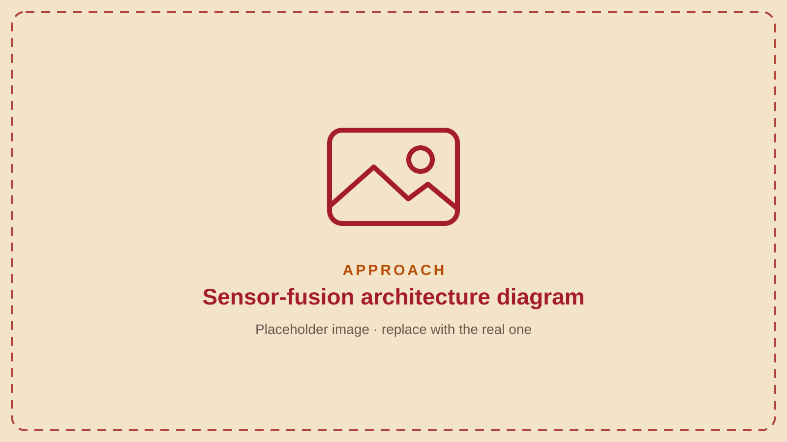

01Multi-sensor fusion
No single sensor works in every condition, so the system combines four: RF, radar, EO/IR and acoustic. Each covers a gap the others leave, and their detections are fused into one decision.
02Weather-based sensor weighting
Trust shifts between sensors as visibility changes: cameras count for more in clear conditions, and as fog or snow sets in the decision leans on the sensors that don’t need to see the target.
03Designed for mountain terrain
The design targets line-of-sight blockage and fog/snow, the two conditions that break conventional counter-drone setups at altitude.
